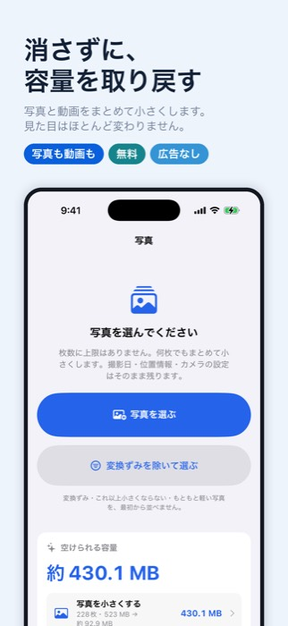
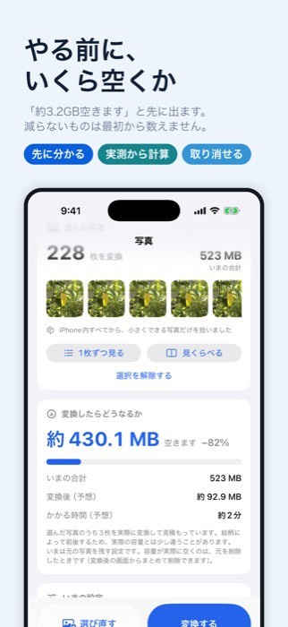
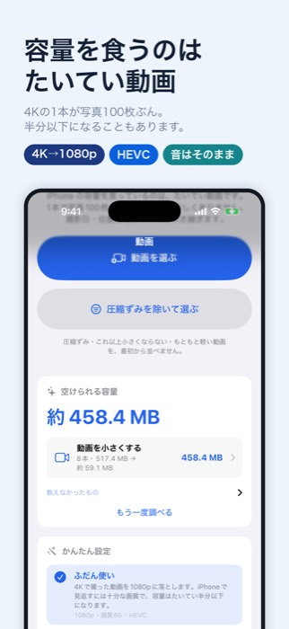
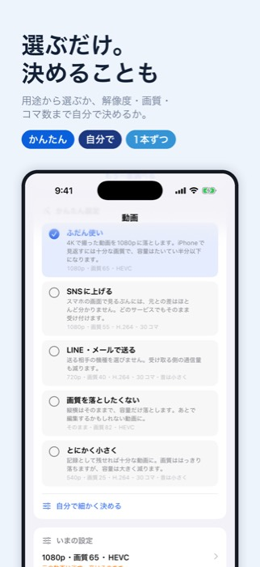
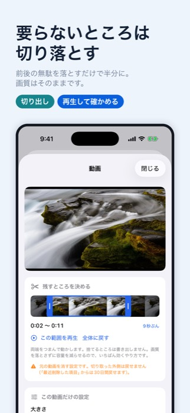
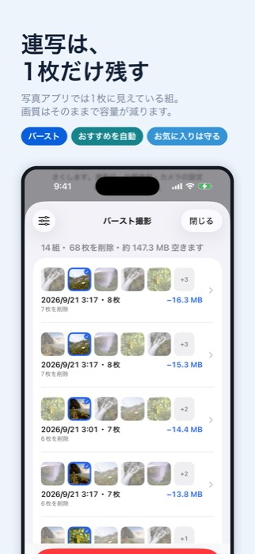
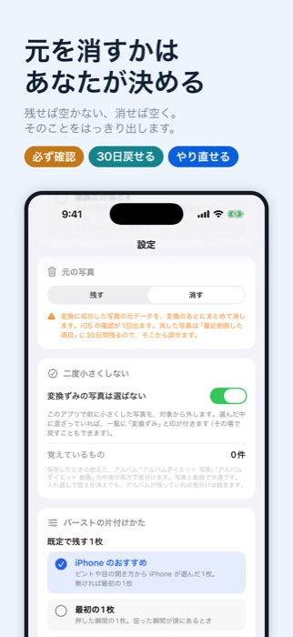
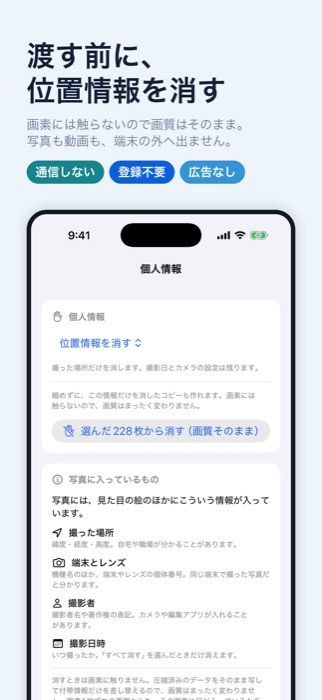

写真と動画をまとめて小さくして、iPhone の空き容量を取り戻す（iOS 17 以降）








容量を空ける方法はふつう「消す」しかありません。このアプリは、写真と動画を 作り直して小さくすることで、見た目をほとんど変えずに容量だけを減らします。 4K で撮った動画1本は、写真100枚ぶんになることも珍しくありません。
「調べる」を押すと、いまの設定で実際に小さくなるものだけを拾い出し、 「約 3.2 GB 空きます」と先に出します。すでに小さい写真、これ以上縮まない動画、 一度小さくしたものは、最初から数えません。
やってみたら思ったより減らなかった、という無駄な画質の低下が起きないようにしています。
シャッターを押しっぱなしにして撮った組（バースト）は、写真アプリでは1枚に見えています。 だから自分が何枚撮ったかに気づけません。20枚の組が20個あれば、それだけで数百枚です。
1枚だけ残してあとを消せば、画質はそのままで容量が減ります。 どれを残すかは iPhone のおすすめから選ばれ、1組ずつ見て選び直せます。 お気に入りと編集した写真は、消さずに守ります。
設定しだいです。写真は「残す」、動画は「消す」が初期設定です。 動画を消す側にしているのは、残したままでは容量が1バイトも空かない——それどころか 合計が増えるためです。消す前には必ず確認が出ますし、設定から変えられます。
写真アプリの「最近削除した項目」に30日間残るので、そこから戻せます。 写真の変換については、アプリの中からも取り消せます。
残ります。写真アプリの並びや地図が崩れないよう、そのまま引き継ぎます。 人に渡す前に消したいときは、「個人情報」の画面から消す範囲を選べます。
送られません。このアプリは通信の仕組みそのものを持っていません。 すべて端末の中だけで処理します。
使えます。「iPhone のストレージを最適化」を有効にしている場合は、原本を ダウンロードしてから処理するため、枚数が多いと時間と通信量がかかります。
使えます。日本語・英語・簡体字中国語・繁体字中国語・韓国語・ドイツ語・ フランス語・スペイン語・ポルトガル語（ブラジル）・イタリア語の10言語に 対応しています。iPhone の言語設定にあわせて切り替わります。
ご質問・ご要望はお問い合わせからどうぞ。 プライバシーポリシーもあわせてご覧ください。
{kind=link}
{kind=link}
{kind=link}
{kind=link}
{kind=link}
{kind=link}
{kind=link}
{kind=link}